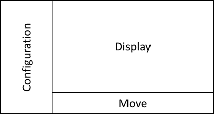
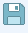
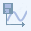
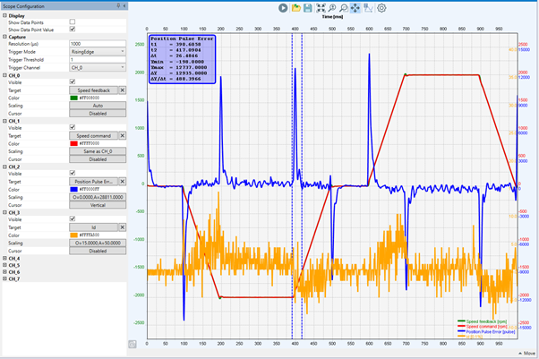

The Scope page implements a graphical view of motion on the drive. Allowing data capture on the drive which can sample data at up to 4kHz, one sample every 125 microseconds. This is then uploaded and can be displayed and maniplulated in the Scope screen.
The Scope screen is divided into 3 sections:

The configuration panel is used to set up the data capture on the drive. There are multiple data capture buffers on the drive which can be used to capture selected items at a specified rate. This is used to build up a time-based graph of the drive operation.
The non channel-based capture setting are:
There are up to 8 capture channels on the drive, depending on the data being capture it may be that not all 8 can be used together.
|
Target |
Description |
|
Position Command |
Set point for the position loop, typically object 0x607A:0 (Target position) |
|
Position Command Speed |
Speed derived from Position Command |
|
Position Feedback |
Position from the motor encoder, typically object 0x6064:0 (Actual position) |
|
Position Error |
Difference between Position Command and Position Feedback |
|
Speed Command |
Set point for the speed loop |
|
Speed Feedback |
Speed from the motor encoder |
|
Current Command (Iqr) |
Set point for the torque generating current loop |
|
Current Feedback (Iq) |
Measured current |
The display area is a time-based graph which shows the data captured on the drive in a graphical format.
The icons allow general graph control
|
Icon |
Function |
|
|
Start capture |
|
|
Load capture data from disk |
|
 |
Save capture data to disk |
|
|
Zoom to fit |
|
|
Zoom in/out using click and drag |
|
|
Box zoom |
|
|
Pan |
|
 |
Save image of graph to clipboard |
|
|
Settings |
Zooming in and out can also be achieved using the mouse wheel.
The image below shows an example of the scope view.

The timebase of the graph is in milliseconds (ms). The y axes have scaling shown in the same color as the data line.
Each data line has a legend shown in the bottom right of the graph.
The move panel allows the initiation of either Jog or Program Jog motion used for drive commissioning.
For more information on the move panel see: